cara lain untuk menguasai materi pelajaran dengan cepat dan mudah
ANALISIS
Materi
Skore
1.Bilangan berpangkat
2.Sistem Persamaan
3.Sistem Pertidaksamaan
4.Trigonometri
5.Persamaan Kuadrat
6.Persamaan Ekponen
7.Barisan dan Deret
8.Peluang
9.Statistik
10.V e k t o r
11.Logika Matematika
12.Program linier
13.Aritmatika SOSIAL
14.M a t r i k
15.Fungsi Komposisi
16.Transformasi
17.Lingkaran
18.Limit
19.Deferensial
20.Integral
Penalaran MTK
Total kelas x
Total kelas xi
Total kelas xii
Computational Thinking/CT
CT : proses berfikir saat memformulasikan persoalan dan berstrategi untuk memilih solusi yang efektif,efisien dan optimal
CT : kemampuan untuk berfikir memanfaatkan komputer/teknologi sebagai alat bantu
Elemen dari CT adalah
1.Dekomposisi adalah proses memecah suatu masalah menjadi beberapa masalah kecil .
2.Pengenalan pola yaitu mengenali persamaan pola
3.Abstraksi adalah proses menyaring data yang diperlukan yang relevan .
Hanya fokus pada informasi penting saja
(misal:saat anda mengendarai mobil apakah perlu mengetahui bagian2 mesin?)
4.Algoritma yaitu susunan langkah penyelesaian
Panduan umum tentang apa yang mungkin termasuk dalam modul ajar Kurikulum Merdeka Matematika untuk SMK. Berikut adalah contoh konten yang mungkin dimasukkan:
1. **Pengenalan Konsep Dasar:**
- Bilangan dan Operasi: Penjumlahan, pengurangan, perkalian, dan pembagian bilangan bulat, pecahan, dan desimal.
- Aljabar: Persamaan linear, sistem persamaan, dan penggunaan rumus dalam konteks praktis.
- Geometri: Pengenalan bentuk, ukuran, dan sifat-sifat geometris, termasuk perhitungan luas, volume, dan sudut.
2. **Penerapan Matematika dalam Konteks Nyata:**
- Studi Kasus Industri: Contoh penggunaan matematika dalam industri dan bisnis seperti manufaktur, konstruksi, atau keuangan.
- Proyek-proyek Terapan: Mahasiswa mungkin diminta untuk menyelesaikan proyek-proyek yang melibatkan perhitungan matematika dalam konteks nyata, seperti perencanaan anggaran atau desain produk.
3. **Teknologi dan Matematika:**
- Penggunaan Perangkat Lunak Matematika: Pengenalan dan penerapan perangkat lunak matematika seperti spreadsheet, software statistik, atau alat geometri dinamis.
- Pemodelan Matematika: Penggunaan teknologi untuk memodelkan situasi dunia nyata dan menganalisis data.
4. **Pemecahan Masalah:**
- Strategi Pemecahan Masalah: Pengembangan keterampilan pemecahan masalah melalui latihan dan studi kasus.
- Penalaran Matematis: Penggunaan logika matematika dalam pemecahan masalah dan pembuktian.
5. **Evaluasi dan Pemantauan:**
- Ujian Tengah Semester dan Akhir Semester: Tes yang menguji pemahaman matematika siswa secara keseluruhan.
- Penilaian Proyek: Penilaian terhadap proyek-proyek terapan yang telah diselesaikan oleh siswa.
6. **Pengembangan Keterampilan Lainnya:**
- Komunikasi Matematis: Latihan dalam menjelaskan dan mengkomunikasikan ide matematika dengan jelas dan tepat.
- Kolaborasi: Pekerjaan kelompok atau proyek-proyek tim yang melibatkan pemecahan masalah matematika.
Harapannya, modul ajar Kurikulum Merdeka Matematika untuk SMK akan menekankan pada penerapan matematika dalam konteks dunia nyata, penggunaan teknologi, dan pengembangan keterampilan pemecahan masalah dan penalaran matematis.
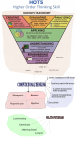
Apa itu Matematika? : Pendekatan Dasar untuk Ide dan Metode.
"Matematik sebagai ekspresi pikiran manusia mencerminkan kemauan aktif, alasan kontemplasi, dan keinginan untuk kesempurnaan estetika. Elemen dasarnya adalah logika dan intuisi, analisis dan konstruksi, generalitas dan individualitas. Meskipun tradisi yang berbeda mungkin menekankan aspek yang berbeda, hanya interaksi dari kekuatan antitesis ini dan perjuangan untuk sintesis mereka yang merupakan kehidupan, kegunaan, dan nilai tertinggi dari ilmu matematika.
Tampaknya ada bahaya besar dalam tekanan berlebihan yang berlaku pada karakter deduktif-postulasi matematika. Benar, unsur penemuan konstruktif, mengarahkan dan memotivasi intuisi, cenderung menghindari rumusan filosofis yang sederhana; tetapi tetap menjadi inti dari pencapaian matematika, bahkan di bidang yang paling abstrak. Jika bentuk deduktif mengkristal adalah tujuannya, intuisi dan konstruksi setidaknya merupakan kekuatan pendorong. Ancaman serius terhadap kehidupan ilmu pengetahuan tersirat dalam pernyataan bahwa matematika tidak lain adalah sistem kesimpulan yang diambil dari definisi dan postulat yang harus konsisten tetapi sebaliknya dapat diciptakan oleh kehendak bebas ahli matematika.
Jika deskripsi ini akurat, matematika tidak dapat menarik orang yang cerdas. Ini akan menjadi permainan dengan definisi, aturan, dan silogisme, tanpa motif atau tujuan. Gagasan bahwa kecerdasan dapat menciptakan sistem postulasi yang berarti sesuai keinginannya adalah separuh kebenaran yang menipu. Hanya di bawah disiplin tanggung jawab terhadap keseluruhan organik, hanya dibimbing oleh kebutuhan hakiki, pikiran bebas dapat mencapai hasil nilai il9miah. "
(Richard Courant, 1941)🍁❣️
Pendidikan yang baik bukanlah apa yang mengisi kepala Anda dengan fakta tetapi apa yang merangsang rasa ingin tahu. Kemudian dengannya anda belajar selama sisa hidup Anda.
(Neil Degrasse Tyson)
Soal 1. Beberapa persamaan linier dapat digabungkan kedalam satu sistem persamaan linier. Metoda untuk menentukan nilai variabel kecuali,adalah
Soal 2. Perhatikan sistem persamaan dibawah ini.
Soal 5. Perhatikan sistem persamaan dibawah ini.
Soal 6. Sistem persamaan linier 3 varibel disingkat
Soal 7. Perhatikan sistem persamaan dibawah ini.
isilah dengan jawaban yang benar
nilai z adalah
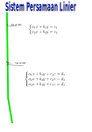
Sistem Pertidaksamaan Linier
Himpunan penyelesaian
...
Berdasarkan diatas maka
gambar diatas merupakan himpunan penyelesaian pertidaksamaan:
Berdasarkan diatas maka
gambar diatas merupakan himpunan penyelesaian pertidaksamaan:
Perhatikan sistem pertidaksamaan dibawah ini
$$\left\{\begin{matrix}
{\color{Blue} \mathbf{1\leq x < 4}}& \\
{\color{Blue} \mathbf{2 < y \leq 4}} &
\end{matrix}\right.$$
Sistem pertidaksamaan daerah yang diarsir:
Daerah yang diarsir merupakan
daerah himpunan penyelesaian
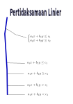
PROGRAM LINIER
...
Barisan & Deret
...
Teori
Barisan adalah susunan angka angka berdasarkan pola bilangan.Barisan aritmatika
jika selesih angka yang berurutan besarnya tetap, sedangkan
barisan geometri jika perbandingan angka angka
yang berurutan besarnya tetap.
Simbol selisih/beda : b sedangkan simbol perbandingan/rasio adalah r.
Barisan
Barisan aritmatika
Barisan aritmatika yang bedanya b adalah
Barisan geometri
Barisan geometri yang rasionya r adalah
Deret
Deret adalah penjumlahan suatu barisan, disimbolkan
Deret aritmatika
Jika maka deret aritmatika adalah penjumlahan barisan aritmatika, disimbolkan
Deret geometri
Deret geometri adalah penjumlahan barisan geometri, disimbolkan
Jika maka deret geometri adalah penjumlahan barisan geometri, disimbolkan
Perhatikan barisan aritmatika dibawah ini
Jika Un=3n-1 maka suku ke 100 adalah
Perhatikan deret berikut ini
maka jumlah 10 suku pertama atau adalah
Perhatikan deret geometri berikut ini
$$ 2 + 4 + 8 + ...+U_5=S_5$$
maka suku ke 5 yakni dan jumlah 5 suku pertama
berturut turut adalah
Perhatikan deret geometri berikut ini
maka jumlah 4 suku pertama atau adalah
isilah dengan jawaban yang benar
nilai adalah
Jumlah 10 suku pertama dari deret :
nilai adalah
Persamaan dan Fungsi Exponen (X)
...
Fungsi eksponen adalah bentuk lain dari fungsi y
dimana x sebagai variabel bebas terletak pada posisi pangkat
dari basis bilangan berpangkat.
Bentuk umum dari fungsi exponen adalah
dimana
a adalah basis
k adalah konstanta
f(x) adalah fungsi x.
Bentuk paling sederhana adalah jika k=1 , a konstanta dan f(x)=x maka fungsi diatas menjadi
Persamaan eksponen adalah persamaan
bilangan berpangkat dimana pangkatnya berupa fungsi x
Sifat 1. Jika
maka f(x)=n
Soal 1
Nilai x agar persamaan diatas benar adalah
1
3
2
5
Sifat 2. Jika
maka f(x)=g(x)
Soal 2
Berdasarkan sifat 2 diatas , nilai x persamaan:
adalah
1
2
4
-3
Tiga asumsi menentukan x suatu persamaan exponen adalah
g(x)=h(x)
f(x)=1
f(x)=0
Untuk menentukan x adalah mengubah persamaan exponen menjadi persamaan biasa
Soal 3 :
berdasarkan sifat 2 maka
x-1=3x+2
x+1=3x-2
(x-1)(3x+2)=0
(x+1)(3x-2)=0
Soal 4: jika suatu persamaan exponen dapat diubah menjadi x-4=3x+2 maka x adalah
2
3
-3
-2
Soal 5.Persamaan exponen
dapat diubah menjadi
Soal 6
nilai x dari persamaan exponen
adalah
2 dan 3
-2 dan -3
-2 dan -3
3 dan -2
Soal 7.Persamaan exponen
himpunan penyelesaiaannya adalah x berturut-turut
-1,0,2
0,1,2
1,2
2
Soal 8.Persamaan exponen
nilai x adalah
4
3
2
1
Soal 9.Fungsi exponen
maka f(2) adalah
5
6
8
9
Soal 10.Fungsi exponen
maka nilai f(2)
Trigonometri (X)
Trigonometri mempelajari perbandingan sisi -sisi
pada segitiga siku...
Perhatikan segitiga siku dibawah ini.
Ada 6 perbandingan dengan simbol sbb
sin A = sisi depan / sisi miring
cos A = sisi samping / sisi miring
tan A = sisi depan / sisi samping
csc A = sisi miring/sisi depan
sec A = sisi miring / sisi samping
ctan A = sisi samping / sisi depan
jika ketiga sisi diketahui nilainya sbb:
perhatikan bahwa 3,4,5 adalah tripel phytagoras , sehingga segitiga ini adalah siku, sehingga berlaku:
sin A = 3/5
cos A = 4/5
tan A = 3/4
csc A = 5/3
sec A = 5/4
ctan A = 4/3
Soal 2. Panjang garis AB pada segitiga siku
Aritmatika Sosial (XI)
Penerapan barisan dan deret aritmatika/geometri adalah menghitung dan mengelola keuangan yakni:
1.Pinjaman. 2.Investasi. 3.Anuitas. ...
Pinjaman
Jika kita meminjam uang ke bank maka bank akan meminta uang tambahan yang disebut bunga
Soal 1 : Jika bunga bank 3% pertahun, berapa besar bunga yang diperoleh bank jika nasabah meminjam Rp 20.000.000
Soal 2 : Jika nasabah ini memperpanjang 1 tahun lagi maka besarnya pinjaman adalah
Pinjaman dengan bunga majemuk
Jika nasabah meminjam ke bank dengan sistem bunga majemuk, maka besar bunga dilakukan terhadap nilai pinjaman terakhir
Misalkan nasabah meminjam Rp 20.000.000 dengan bunga 10% maka setelah 1 tahun pinjamannya menjadi 20.000.000+10%x20.000.000=Rp 22.000.000
Selanjutnya jika nasabah ini memperpanjang masa pinjaman maka pada akhir tahun ke 2 pinjamannya menjadi 22.000.000+10%x22.000.000=Rp 24.200.000
Soal 3: Tentukan besar pinjaman nasabah yang meminjam 100.000.000 di bank dengan sistem bunga majemuk dengan buka 10% selama 3 tahun?
Rumus bunga majemuk:
$M_{t}=M_{0}(1+i)^t$
dimana $M_0$ pinjaman awal, $M_{t}$ pinjaman/hutang setelah t tahun
Soal 4 : Tentukan besar hutang nasabah
yang meminjam 100T di suatu bank dengan sistem bunga majemuk dengan buka 4% selama 10 tahun? menggunakan tabel bunga
120T
130T
133T
140T
Anuitas
Anuitas adalah pengembalian pinjaman secara diangsur dengan besaran yang tetap,
dimana anuitas=angsuran+bunga.
Konsep yang digunakan adalah deret geometri,sbb.
Berdasarkan rumusan bunga majemuk $M_{t}=M_{0}(1+i)^t$ maka $M_{0}=\frac{M_{t}}{(1+i)^t}$
jika diuraikan ke deret geometri akan menjadi
$M_{0}=\frac{M_{t}}{(1+i)} + \frac{M_{t}}{(1+i)^2}+\frac{M_{t}}{(1+i)^3}+...+\frac{M_{t}}{(1+i)^t}$
Selanjutnya istilah ekonomi $M_{0}=H$ = adalah besarnya pinjaman dan $M_{t}=A$ =adalah anuitas
$H=\frac{A}{(1+i)} + \frac{A}{(1+i)^2}+\frac{A}{(1+i)^3}+...+\frac{A}{(1+i)^t}$
Deret geometri
$S_{n}=a+ar+ar^2+...ar^n$
dimana $S_{n}=a(\frac{1-r^n}{1-r})$
$S_{n}=A(\frac{1}{(1+i)} + \frac{1}{(1+i)^2}+\frac{1}{(1+i)^3}+...+\frac{1}{(1+i)^n})$
jika H=$S_{n}$ maka
$H=A(\frac{1}{(1+i)} + \frac{1}{(1+i)^2}+\frac{1}{(1+i)^3}+...+\frac{1}{(1+i)^n})$
atau
Rumus anuitas
$A=H\frac{1}{ \sum_{n=1}^{n} \frac{1}{(1+i)^n}}$
dimana H adalah besar pinjaman dan A adalah angsuran
Soal 5 : Seorang pengusaha membeli mobil seharga
360 Juta dengan cara kredit dari
OTO Finansial dengan bunga 3% / tahun.
Pengusaha ini mencicil 3 kali. Berapa besar cicilan?
10Jt
12Jt
15Jt
20Jt
Matrik(XI)
...
soal 1
ordo matrik A dibawah ini
adalah
1x2
2x2
2x1
3x2
soal 2
ordo matrik B dibawah ini
adalah
2x3
2x2
2x1
3x2
soal 3
matrik C dibawah ini
disebut matrik
matrik baris
matrik kolom
matrik identitas
matrik segitiga
adalah matrik
matrik segitiga bawah
matrik segitiga atas
matrik diagonal
matrik nol
soal 6
perhatikan elemen matrik F dibawah ini
elemen $F_{23}$ adalah
0
3
5
2
soal 7
Perhatikan persamaan matrik dibawah ini
nilai x = ... yang memenuhi persamaan matrik diatas adalah
1
2
3
4
soal 8
Perhatikan persamaan dibawah ini
nilai b = ... yang memenuhi persamaan diatas adalah
4
2
1
3
soal 9
Perhatikan penjumlahan matrik dibawah ini
hasil penjumlahan matrik adalah
soal 10
Perhatikan matrik A dan B
jika C=A-2B maka C adalah
1
-1
2
3
soal 14
cofaktor dari matrik C
soal 15
hasil perkalian 2 matrik
hasil perkalian matrik diatas adalah
soal 19
soal 20
Perhatikan perkalian matrik dibawah ini
ordo hasil perkalian matrik diatas adalah
1x2
2x1
2x2
3x2
isilah dengan jawaban yang benar
esai 1
esai 2
esai 3
esai 4
esai 5
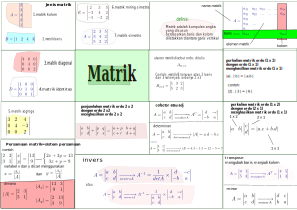
Vektor
...
TEORI. Vektor adalah besaran yang memiliki nilai dan arah.
Simbol tambahan agar a menjadi vektor
adalah menambah tanda panah diatas a sehingga menjadi
.
Vektor satuan yang arahnya x+ diberi simbol i, sehingga untuk
menyatakan 4 satuan arah x+ adalah 4i.Sedangkan untuk satuan arah y+ diberi simbol j.
Operasi Vektor:
jika $$\vec{a}=x_{1}i+y_{1}j $$
1.Penjumlahan dan pengurangan.
$$\vec{a}+\vec{b}=(x_{{1}}+x_{2})i+(y_{1}+y_{2})j $$
$$\vec{a}-\vec{b}=(x_{{1}}-x_{2})i+(y_{1}-y_{2})j $$
2.Perkalian skalar
jika m skalar maka
$$m\vec{a}=(mx_{1})i+(my_{1})j $$
3.Perkalian titik.
$$a\bullet b=\begin{vmatrix}
a\end{vmatrix}\begin{vmatrix}
b\end{vmatrix}cos\theta $$
4.Perkalian silang
$$ a\times b=\begin{vmatrix}
a\end{vmatrix}\begin{vmatrix}
b\end{vmatrix}sin\theta $$
pilihan ganda
3i
4i
4j
3j
Persamaan dan Fungsi Kuadrat
...
Soal 1 . Definisi persamaan kuadrat
a,b,c : real a,b,c : real dan a tidak boleh nol
a,b,c : bilangan asli
a,b,c : bilangan positif
Tiga cara menentukan akar suatu persamaan kuadrat adalah:
faktorisasi
melengkapi kuadrat sempurna
rumus abc
Faktorisasi adalah mengubah persamaan kuadrat menjadi perkalian 2 persamaan linier
Soal 2. Jika suatu persamaan kuadrat dapat diubah menjadi (x-2)(x-3) maka akar-akar persamaan ini adalah
-2 dan -3
2 dan 3
-2
-3
Soal 3. Jika suatu persamaan kuadrat dapat diubah menjadi (x+2)(x-3) maka akar-akar persamaan ini adalah
2 dan 3
-2 dan -3
-2 dan 3
3
Soal 4. Jika persamaan kuadrat dapat diubah menjadi (x+2)(2x+3) maka akar-akar persamaan ini adalah
-2 dan -3/2
-2 dan 3/2
-2 dan 2/3
-2 dan -3
Soal 5. Jika suatu persamaan kuadrat dapat diubah menjadi (3x-2)(2x+3) maka akar-akar persamaan ini adalah
2/3 dan 3/2
2 dan -3
-2 dan 3
2/3 dan -3/2
Soal 6. Persamaan
dapat difaktorisasi menjadi
(x+4)(x-3)=0
(x-4)(x-3)=0
(x-4)(x+3)=0
(x+3)(x+4)=0
Soal 7. Persamaan
dapat difaktorisasi menjadi
(x+3)(x-2)=0
(x-2)(x-3)=0
(x-3)(x+2)=0
(x+2)(x+3)=0
Soal 8. Persamaan
dapat difaktorisasi menjadi
(x+6)(x-2)=0
(x-3)(x+2)=0
(x-6)(x+2)=0
(x+3)(x-2)=0
Soal 9. Persamaan
dapat difaktorisasi menjadi
(x-6)(x+1)=0
(x-3)(x+2)=0
(x+6)(x-1)=0
(x+3)(x-2)=0
Soal 10. Persamaan
dapat difaktorisasi menjadi
(x-6)(x+1)=0
(x+6)(x-1)=0
(x-2)(x+3)=0
(x-3)(x+2)=0
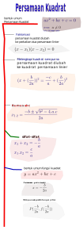
Fungsi Komposisi dan Invers fungsi (XI)
...
Komposisi fungsi adalah penggabungan operasi dua fungsi atau lebih secara
berurutan sehingga menghasilkan fungsi baru
yang disebut fungsi komposisi
Jika ada dua fungsi yakni f(x) dan g(x), maka ada dua kemungkinan fungsi komposisi berdasarkan urutan ialah
1.f(g(x))
2.g(f(x))
dimana f(g(x)) artinya urutan yang dikerjakan dimulai dari g kemudian f ,
sedangkan g(f(x)) artinya urutan yang dikerjakan dimulai dari f kemudian g .
Notasi lain
$f\circ g =f(g(x))$ dibaca f bundaran g atau f komposisi g
$g\circ f =g(f(x))$ dibaca g bundaran f atau g komposisi f
Langkah menentukan f(g(x)) jika diketahui f=2x dan g=x-1 adalah
1.Tulis f(x)=2x
2.Ganti x dengan g sehingga menjadi f(g)=2g
3.Ganti g dengan g(x)=x-1 sehingga menjadi f(g(x))=2(x-1)
4.uraikan 2(x-1) menjadi 2x-2
5.Jadi f(g(x))=2x-2
soal 1
Jika f=2x+1 dan g=5x maka
10x+1
10x
10x+5
10x-5
soal 2
Jika f=2x dan g=3x-1 maka
6x-2
6x
6x-1
6x+1
soal 3
Jika f=x-1 dan g=3x-1 maka
x-3
3x-1
3x+4
3x-4
soal 4
Jika f=-2x+1 dan g=2x+1 maka
-4x-3
-4x+3
4x+3
4x-1
soal 5
Jika f=2x-1 dan g=-x-1 maka
-2x
2x
-2x+2
-2x+1
soal 6
Jika f=3x dan g=5x-1 maka
15x-1
15x
15x-3
15x
soal 7
Jika f=2x dan g=3x-1 serta h=x-2 maka
6x
6x-1
6x+3
6x-3
soal 8
Jika f=x+1 dan g=2x-1 serta h=x+3 maka
2x+1
2x+4
2x+3
2x
soal 9
Jika f=2x+1 dan g=3x-1 serta h=2x-3 maka
12x+1
12x-1
12x
12x-2
soal 10
Jika f=x+1 dan g=3x-1 maka
5
7
8
9
Invers fungsi
Jika f yang dinyatakan dengan pasangan berurut f{(x,y)} maka inversnya adalah $f^{-1}${(y,x)}
Sifat 1
Jika f(x)=ax+b maka inversnya adalah: $f^{-1}(x)=(x-b)/a$
Contoh soal.
Tentukan invers dari fungsi f=2x+3
jawab
Gunakan sifat 1 diatas, invers f adalah $f^{-1}(x)=(x-3)/2$
Sifat 2
Jika $f(x)=\frac{ax+b}{cx+d}$ maka inversnya adalah: $f^{-1}(x)=\frac{-dx+b}{cx-a}$
Contoh soal.
Tentukan invers dari fungsi $f(x)=\frac{2x+3}{4x+5}$
jawab
Gunakan sifat 2 diatas, invers f adalah $f^{-1}(x)=\frac{-5x+3}{4x-2}$
Jika $f=x+1$ maka
$(f \circ f \circ f \circ f )(x) = ...$
x+3
$4x+4$
$x+4$
$4x+1$
soal 20
Jika $g=3x-2$ dan $(f \circ g)(x)=6x-3$ maka
$f(x) = ...$
$2x+1$
$2x+3$
$2x-1$
$2x-4$
Jika fungsi komposisi h(x) diketahui maka fungsi f dapat dicari jika fungsi g diketahui dan sebaliknya.
Contoh 1.
Diketahui fungsi komposisi f(g(x))=3x+5
Tentukan fungsi g(x) jika f(x)=x+1
Jawab:
f(x)=x+1
f(g)=g+1
f(g(x))=g(x)+1
3x+5=g(x)+1
g(x)+1=3x+5
g(x)=3x+5-1
g(x)=3x+4
jadi g(x)=3x+4
Contoh 2.
Diketahui fungsi komposisi f(g(x))=3x+1
Tentukan fungsi f(x) jika g(x)=x+1
Jawab:
f(g(x))=3x+1
f(x+1)=3x+1
misal x+1=a
f(a)=3x+1
dari x+1=a diperoleh x=a-1
f(a)=3(a-1)+1
f(a)=3a-3+1
f(a)=3a-2
jadi f(x)=3x-2
Dengan cara diatas selesaikan soal 21-25
soal 21
Jika $g=3x+5$ dan fungsi komposisi $(f \circ g)(x)=6x+15$ maka
$f(x) = ...$
$2x+5$
$x+3$
$2x-5$
$2x-4$
soal 22
Jika $f=x-2$ dan $(f \circ g)(x)=2x-5$ maka
$g(x) = ...$
2x-5
2x-7
2x+3
$2x-3$
soal 23
Jika $f=3x+1$ dan $(f \circ g)(x)=6x-8$ maka
$g^{-1}(x) = ...$
Jika $g=2x-5$ dan $(f \circ g)(x)=2x-1$ maka
$f^{-1}(x) = ...$
$2x+6$
$6x-1$
$x+6$
$3x-6$
soal 25
Jika $f=2x+3$ dan $(f \circ g)(x)=2x^2+8x+15$ maka
$g(x) = ...$
$x^2+4x+6$
$2x^2+3x+2$
$2x^2-2x-1$
$x^2-5x+9$
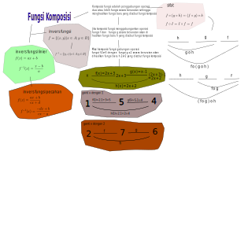
youtube
Transformasi Geometri (XI)
Transformasi = perubahan ; geometri : hal yang berhubungan dengan titik , sudut, garis , bidang, ruang. Transformasi geometri
dapat diartikan sebagai perubahan kedudukan suatu titik pada koordinat Cartesius.
Jenisnya:
1.Translasi/pergeseran. 2.Refleksi/pencerminan. 3.Rotasi/perputaran. 4.Dilatasi/skala.
...
Translasi
Translasi adalah pergeseran koordinat titik A(x,y) oleh
translasi T(a,b) sehingga diperoleh titik baru A'(x+a,y+b).
Tentukan hasil translasi A(2,3) oleh T(1,2)
Tentukan hasil translasi A(2,3) oleh T(-1,-2)
Refleksi
refleksi adalah perubahan koordinat titik A(x,y) dengan menggunakan sifat bayangan dari cermin datar, yaitu
jarak titik A(x,y) kecermin sama dengan jarak bayangan A'(x',y') ke cermin.
Pencerminan terhadap sumbu x :
A(x,y) -> A'(x,-y)
Pencerminan terhadap sumbu y :
A(x,y) -> A'(-x,y)
Pencerminan terhadap garis x=h :
A(x,y) -> A'(2h-x,y)
Pencerminan terhadap garis y=h :
A(x,y) -> A'(x,2h-y)
Pencerminan terhadap garis y=x :
A(x,y) -> A'(-y,-x)
Titik A(6,8) dicerminkan terhadap garis x=4, maka bayangan A' adalah
Garis 2x-y+7=0 direfeksikan terhadap sumbu x menjadi
Rotasi
Rotasi adalah perubahan koordinat titik A(x,y) akibat perputaran terhadap titik putar dengan besar A derajat.
Jika titik putarnya O(0,0) maka hasil putaran A(x,y) adalah A'(x',y') dimana:
x'=x cos A - y sin A
y'=x sin A + y cos A
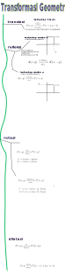
Persamaan Lingkaran(XI)
...
Lingkaran adalah tempat kedudukan titik - titik yang berjarak sama
terhadap 1 titik, yang disebut titik pusat lingkaran. Jarak dari lingkaran
ke titik pusat lingkaran disebut jari-jari lingkaran degan simbol r.
Soal 1.Jika titik pusat lingkaran adalah O(0,0) maka persamaan umum lingkaran
adalah
Soal 1.Berdasarkan diatas maka persamaan lingkaran yang berpusat di O dengan
jari-jari 5 adalah
Jika titik pusat lingkaran adalah P(a,b) maka persamaan umum lingkaran
adalah
Soal 2.Berdasarkan diatas maka persamaan lingkaran yang berpusat di P(1,-2) dengan
jari-jari 5 adalah
Jika titik pusat lingkaran adalah P(-A/2,-B/2) maka persamaan umum lingkaran
adalah
dimana jari-jari r adalah
$$r=\sqrt{\frac{A^{2}}{4}+\frac{B^{2}}{4}-C}$$
Soal 3.pusat lingkaran yang persamaannya
$$x^{2}+y^{2}-4x-6y-12=0$$
adalah
P(2,3)
P(2,4)
P(3,2)
P(-2,-3)
Soal 4.jari-jari lingkaran r yang persamaannya
$$x^{2}+y^{2}-2x+6y+1=0$$
adalah
2
4
3
5
Soal 5.Persamaan garis singgung yang melalui titik P(3,4) dari persamaan
adalah
Soal 6. Pada segiempat talibusur ABCD diketahui sudut A adalah 80^0, maka sudut C adalah
60
70
100
120
Soal 7. Perhatikan lingkaran dibawah ini. Jika jari-jari r=5
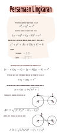
Logika Matematika
...
Suatu pernyataan yang bernilai benar atau salah disebut kalimat tertutup sebaliknya jika pernyataan tersebut nilai
kebenarannya belum pasti disebut kalimat terbuka.
Selanjutnya yang dimaksud dengan pernyataan dalam pembahasan dibawah ini adalah kalimat tertutup.
Berdasarkan pengertian konjungsi maka
pernyataan : Walaupun sering diejek, Ani tidak marah.
Invers dari pernyataan: "Jika Budi lulus, maka ia dibelikan laptop" , adalah
Pernyataan majemuk dapat juga ditentukan ingkarannya/negasinya.
1.Negasi Konjungsi
p:saya naik kelas; q:saya gembira
Suatu kalimat terbuka dapat diubah menjadi pernyataan dengan menggunakan kuantor yakni ungkapan
yang bermakna "berapa banyak" . Ada dua jenis:,
1.Kuantor universal yakni menggunakan kata "semua" atau "setiap". 2.Kuantor eksistensial yakni menggunakan : ada, beberapa
negasi dari "semua siswa kelas xi mengikuti upacara" adalah
semua siswa kelas xi mengikuti upacara
beberapa siswa kelas xi mengikuti upacara
Ani kelas x tidak mengikuti upacara
semua siswa kelas xi tidak mengikuti upacara
Pernyataan majemuk erat kaitannya dengan
1.Ekivalensi yakni jika kedua pernyataan mempunyai nilai kebenaran yang sama
2.Kontradiksi:tabel kebenaran dari kedua pernyataan selalu salah
3.Tautologi:tabel kebenaran selalu benar disebut juga valid;
penarikan kesimpulan berdasar modus: ponens,
tollens dan silogisme adalah valid/sah karena tabel kebenarannya benar semua
isilah dengan jawaban yang benar
perhatikan premis-premis p dan q dibawah ini
p:hari hujan
q:jalanan basah
Argumen dibawah ini
...jika hari hujan maka jalanan basah(benar) ~ q jalanan tidak basah (benar)
kesimpulannya: hari tidak hujan
maka penarikan kesimpulan cara diatas
adalah berdasarkan modus:
bentuk implikasi: , disebut:
maka penarikan kesimpulan cara diatas
terhadap:
Limit Fungsi Aljabar (XII)
...
Definisi limit secara intuitif
Perhatikan tabel dibawah ini, jika x mendekati 2 maka nilai f mendekati 7 .
x
f(x)=x+5
...
...
1.9
6.9
1.99
6.99
1.999
6.999
1.9999
6.9999
...
...
2
7
secara matematika ditulis limx → 2(x+5)=7
Definisi limit secara aljabar
Jika limit fungsi f(x) ada nilainya , yaitu ketika x mendekati a adalah bernilai L, ditulis
$$\lim\limits_{x \to a} f(x)=L$$
maka f(x)-L tidak sama dengan 0, dan x-a tidak sama dengan 0,
sehingga sedekat apapun x-a maka akan ada f(x)-L sekecil apapun.
Nilai limit dapat diperoleh dengan cara sbb.
1.SUBSTITUSI/ pergantian
2.FAKTORISASI
3.PERKLIAN DENGAN SEKAWAN
1.Substtusi Nilai limit suatu fungsi f(x) jika x mendekati suatu nilai a adalah f(a), yaitu dengan
mensubstitusikan/mengganti x dengan a.
TEOREMA LIMIT
Misalkan f dan g adalah fungsi-fungsi yang mempunyai limit di x=a yaitu
$$\lim\limits_{x \to a} f(x)=f(a)=M$$ dan $$\lim\limits_{x \to a} g(x)=g(a)=N$$
maka ada sifat-sifat limit sbb:
Sifat 1
Jika f(x)=k dimana k konstanta maka :
$$\lim\limits_{x \to a} k=k$$
soal 1
Berdasarkan sifat 1, maka $\lim\limits_{x \to 2} 3= ...$ adalah
2
3
7
10
Sifat 2
jika f(x)=x maka $$\lim\limits_{x \to a} x=a$$
soal 2
Berdasarkan sifat 2, maka
$\lim\limits_{x \to 2} x= ...$ adalah
1
2
3
5
Sifat 3
Jika f(x)=k.f(x) dimana k konstanta maka $$\lim\limits_{x \to a} k.f(x)=k.f(a)$$
soal 3
Berdasarkan sifat 3, tentukan : $\lim\limits_{x \to -2} 3x= ...$adalah
2
3
-6
6
Sifat 4: Penjumlahan / pengurangan limit
Jika h(x)=f(x)+g(x) dimana f dan g fungsi x maka
$$\lim\limits_{x \to a} (f(x)+g(x))=\lim\limits_{x \to a} f(x)+\lim\limits_{x \to a} g(x)$$
soal 4
Berdasarkan sifat 4, maka
$\lim\limits_{x \to 2} 3+x= ...$ adalah
Berdasarkan sifat 5 , tentukan : $\lim\limits_{x \to 3} \frac {(2x+1)} {(x-2)}$ adalah
3
6
7
5
soal 6
berdasarkan sifat 5, tentukan : $\lim\limits_{x \to 4} (x-1)(x-2)$ adalah
2
6
13
14
2.Faktorisasi. Jika hasil substitusi menyebabkan
$$\lim\limits_{x \to a} h(x) =\lim\limits_{x \to a} \frac {0} {0}$$
timbul bentuk tak tentu 0/0, maka dilakukan faktorisasi, misalkan
$$\lim\limits_{x \to 1} \frac {x^2-1} {x-1}$$
jika angka 1 disubstitusi ke x maka timbul bentuk 0/0
maka $$x^2-1$$ diuraikan/difaktorisasi dahulu menjadi (x-1)(x+1) sehingga h(x)=x+1
$$\lim\limits_{x \to 1} \frac {x^2-1} {x-1}=\lim\limits_{x \to 1} \frac {(x-1)(x+1)} {x-1}$$
$$=\lim\limits_{x \to 1} x+1=2$$
dimana (x-1) saling meniadakan
soal 7
Tentukan nilai limit dibawah ini dengan menggunakan cara faktorial.
$\lim\limits_{x \to 2} \frac {x^2-4} {x-2}$
2
4
8
10
Sifat 6
Sebaliknya, jika hasil substitusi menyebabkan
$$\lim\limits_{x \to \sim} h(x) =\frac {\sim} {\sim}$$
maka dapat diselesaikan, jika pangkat tertinggi dari f(x) sama dengan g(x), seperti
$$\lim\limits_{x \to \sim} \frac{1}{x}=0$$
Contoh. Hitung nilai limit dibawah ini dengan cara pembagian dengan variabel pangkat tertinggi, lalu gunakan sifat 7
$$\lim\limits_{x \to \sim} \frac{6x+2}{3x}$$
jawab
bagilah dengan x masing-masing pembilang dan penyebut , menjadi
$$\lim\limits_{x \to \sim} \frac{6x+2}{3x}=\lim\limits_{x \to \sim} \frac{\frac{6x+2}{x}}{\frac{3x}{x}}$$
$$=\lim\limits_{x \to \sim} \frac{\frac{6x}{x}+\frac{2}{x}}{\frac{3x}{x}}$$
$$=\lim\limits_{x \to \sim} \frac{6+0}{3}=2$$
soal 9
Hitung limit dibawah ini menggunakan sifat 7 diatas
$\lim\limits_{x \to \sim} \frac{4x-5}{3x+2}$
0
1
Sifat 8
Pada kasus dibawah perhatikan bahwa pangkat tertingginya sama dan koefisien pangkat tertingginya juga sama.
Misalkan y=f(x) adalah fungsi dari x maka turunan dari y terhadap x dinotasikan dengan y'=f'(x) dan
didefinisikan sbb:
$$y'=\lim\limits_{h \to 0} \frac{f(x+h)-f(x)}{h} $$
Dari definisi diatas dapat diperoleh sifat-sifat deferensial sbb:
catatan: jika fungsinya dinyatakan dengan y maka turunannya y' sebaliknya
jika f(x) maka simbol turunannya f'(x)
sifat 3
maka turunannya
Soal 1.Berdasarkan sifat diatas, nilai y' dari $$y=x^3$$ adalah
Soal 2.Berdasarkan sifat diatas, nilai y' dari $$y=\frac{1}{x^3}$$ adalah
sifat 4
maka turunannya
Soal 3.Berdasarkan sifat diatas, nilai y' dari $$y=2x^3$$ adalah
sifat 6
dimana u(x) adalah fungsi x maka turunannya
Soal 4.Berdasarkan sifat diatas, nilai y' dari $$y=2(x^2+1)^3$$ adalah
$6(x^2+1)^2(2x)$
sifat 7
dimana u(x) dan v(x) adalah fungsi x maka turunannya
Soal 5.Berdasarkan sifat diatas, nilai y' dari $$y=2x^3+3x^2$$ adalah
sifat 8
dimana u(x) dan v(x) adalah fungsi x maka turunannya
Soal 6.Berdasarkan sifat diatas, nilai y' dari $y=(2x^3)(3x^2)$ adalah
dimana c adalah konstanta / bilangan maka turunannya
Soal 8.Berdasarkan sifat diatas, nilai y' dari $y=2+3x$ adalah
5
3
0
-2
sifat 5
dimana u(x) adalah fungsi x dan c konstanta maka turunannya
Soal 9.Berdasarkan sifat diatas, nilai y' dari $y=2(x^3+3)$ adalah
sifat 2
maka turunannya
Soal 10.Berdasarkan sifat diatas, nilai y' dari $y=3x^3$ adalah
Garis singgung pada suatu kurva
Garis singgung yang melalui titik dengan koordinat (a,f(a)) pada kurva y=f(x) adalah y-f(a)=m(x-a) dimana m adalah gradien yang nilainya adalah m = f'(a).
Soal 11.Berdasarkan diatas, nilai f'(1) dari $f(x)=3x^2$ adalah
Soal 12.Berdasarkan diatas, jika A(2,f(2)) terletak pada kurva $f(x)=3x^2$ maka koordinat titik A adalah
Soal 13.Persamaan garis singgung yang melalui titik B(1,3) pada kurva $f(x)=3x^2$ adalah
Soal 14.Persamaan garis singgung yang melalui titik P(-1,3) pada kurva $f(x)=3x^2$ adalah
Soal 15.Persamaan garis singgung yang melalui titik Q(0,-6) pada kurva $f(x)=x^2-x-6$ adalah
Fungsi naik/turun
Untuk a < b maka jika gradien m>0 untuk setiap x dalam interval (a,b)
maka f(x) merupakan fungsi naik, dan sebaliknya
jika gradien m<0 untuk setiap x dalam interval (a,b)
maka f(x) merupakan fungsi turun.
Soal 16. Sifat fungsi $f(x)=x^3$ pada interval -1 < x < 1 adalah
naik
turun
tetap
tak tentu
Soal 17. Sifat fungsi $f(x)=x^3-3x^2$ adalah
naik pada interval x < 2
naik pada interval x < 0 dan x > 2
naik pada interval 0 < x < 2
naik pada interval x > 0
Soal 18. Sifat fungsi $f(x)=10x-x^2$
adalah
Soal 19. Sifat fungsi $f(x)=(x-1)^2(x+5)$
adalah turun pada interval
-3 < x < 1
0 < x < 1
-1 < x < 3
x<-1 atau x > 3
Soal 20. Sifat fungsi $f(x)=x^3+\frac{3}{2}x^2$ adalah
naik pada interval x<0 dan x>1
naik pada interval x < 0 dan x > 1 turun pada interval 0 < x < 1
naik pada interval 0 < x < 1
turun pada interval x < 0 dan x > 1 dan naik pada interval 0 < x < 1
Nilai maksimum / minimum
Misalkan fungsi f(x) terdefinisi dalam interval tertutup I, dimana $ a\in I$,
maka: f(a) adalah nilai maksimum jika $f(a)\geqslant f(x)$ untuk $ x\in I$ dan,
f(a) adalah nilai minimum jika $f(a)\leqslant f(x)$ untuk $ x\in I$
Soal 21. Nilai maksimum dan minimum fungsi $f(x)=x^2-4x$ pada interval $-2\leqslant x\leqslant 0$ adalah
12 dan 2
12 dan 1
9 dan 0
12 dan 0
Soal 22. Nilai maksimum fungsi $f(x)=x^5-15x^3$ pada titik
(1,-14)
(-3,162)
(3,-162)
(0,0)
Soal 23. Nilai maksimum dan minimum fungsi $f(x)=x^2-4x$ dalam interval $1\leqslant x\leqslant 4$ adalah
0 dan -4
0 dan -3
1 dan -4
1 dan 2
Soal 24. Koordinat titik balik maksimum fungsi $f(x)=x^3-6x^2+2$ pada interval $-1\leqslant x\leqslant 0$ adalah
(0,2) dan (-4,30)
(2,0) dan (-4,30)
(4,-30) dan (0,2)
(0,2) dan (4,-30)
Soal 25. Salah satu nilai stasioner dari fungsi $f(x)=x^3-3x+30$ pada interval $-5\leqslant x\leqslant 0$ adalah
25
24
32 .
21
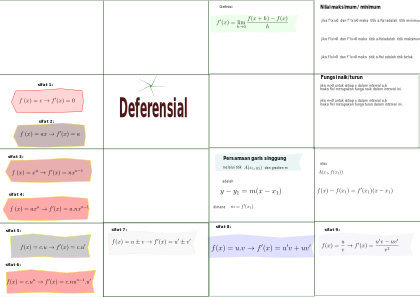
Integral (XII)
Integral adalah kebalikan dari deferensial atau disebut
juga antiderivat. Jika f(x) diturunkan terhadap x dapat dinyatakan dengan d/dx(f(x)).
Dimana d/dx disebut operator untuk turunan.
Sedangkan operator untuk integral adalah $\int$.
Dengan demikian jika d/dx(f(x))=F(x) maka $\int F(x).dx$=f(x)
...
jika a bilangan real , dan
$$n\neq -1$$
maka
sifat 1 :
Soal 1:
Hitunglah integral dari:
\(\int (3x^2 + 2x - 1) \, dx\)
\(x^3 + x^2 - x\)
\(x^3 + x - 1\)
\(x^3 + x^2 + x\)
\(3x^3 + x^2 - x\)
Soal 2:
Hitunglah integral dari:
\(\int \frac{1}{x} \, dx\)
\(\ln|x|\)
\(\ln(x)\)
\(\ln(x^2)\)
\(\frac{1}{2}\ln(x^2)\)
Berdasarkan sifat 1 tentukan nilai dari
Sifat 1a Integral
jika pada sifat 1 diatas , a=1, maka
Berdasarkan sifat 1a maka
Tentukan nilai integral :
Berdasarkan sifat 1a adalah
x x
Sifat 1b Integral
jika n=0 maka
Berdasarkan sifat 1b maka
Integral substitusi
Integral parsial
Integral Tentu
adalah perhitungan hasil integral yakni F(x) dengan batas tertentu, jika batas bawah x=a
dan batas atas x=b maka hasilnya adalah F(b) - F(a)
Berdasarkan diatas maka
$$\int_{a}^{b}x=\frac{1}{2}x^{2}=\frac{1}{2}b^{2}-\frac{1}{2}a^{2}$$
dimana $$F(x)=\frac{1}{2}x^{2}$$
Hitung integral tertentu dibawah ini
Hitung integral tertentu dibawah ini
Luas: penerapan Integral Tentu
Integral tentu digunakan antara lain untuk menghitung luas daerah antara dua kurva. Misalkan antara f(x) dengan g(x).
dengan batas bawah x=a dan batas atas x=b maka hasilnya adalah L= F(x) - G(x)
$$\int_{a}^{b}(f(x)-g(x))=(F(b)-F(a)) - (G(b) - G(a))$$
dimana F(x) dan G(x) adalah hasil integrasi masing-masing f(x) dan g(x)
Contoh: Hitung luas daerah diantara f(x)= 2x dan g(x)=1 dari x=1 sampai x=3
Luas kurva dibawah sumbu x
dengan menggunakan rumus adalah
isilah dengan jawaban yang benar
nilai
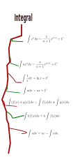
Peluang
Peluang adalah ukuran dari seberapa mungkin suatu kejadian akan terjadi, dinyatakan sebagai rasio antara jumlah kejadian yang diinginkan dengan jumlah total kemungkinan kejadian. Ini sering diukur sebagai pecahan antara 0 (tidak mungkin) dan 1 (pasti terjadi).
...
Peluang juga dapat diungkapkan dalam bentuk desimal atau persentase. Misalnya, jika ada 3 bola merah dan 5 bola biru dalam sebuah kotak, peluang untuk mengeluarkan bola merah adalah 3/8.
Kaidah pencacahan dalam matematika adalah prinsip yang digunakan untuk menghitung jumlah objek dalam suatu himpunan dengan mengasosiasikan setiap objek dengan bilangan dalam himpunan tertentu. Salah satu contoh kaidah pencacahan adalah kaidah penjumlahan.
Contoh kaidah penjumlahan:
Misalkan Anda ingin mengetahui total jumlah uang di dompet Anda. Anda memiliki beberapa koin: 3 koin senilai 25 sen, 5 koin senilai 10 sen, dan 2 koin senilai 5 sen.
Anda dapat menggunakan kaidah penjumlahan untuk mengetahui jumlah total uang dengan menjumlahkan nilai masing-masing koin:
Jumlah total uang = (jumlah koin 25 sen) + (jumlah koin 10 sen) + (jumlah koin 5 sen)
= (3 × 25 sen) + (5 × 10 sen) + (2 × 5 sen)
= 75 sen + 50 sen + 10 sen
= 135 sen
Jadi, menggunakan kaidah penjumlahan, jumlah total uang di dompet Anda adalah 135 sen.
Kaidah pencacahan dalam matematika adalah metode untuk menghitung jumlah objek dalam suatu himpunan dengan mengasosiasikan setiap objek dengan bilangan dalam himpunan tertentu. Salah satu contoh yang paling umum dari kaidah pencacahan adalah kaidah perkalian.
Contoh kaidah perkalian:
Misalkan Anda ingin mengetahui berapa banyak peserta dalam sebuah kelas jika setiap baris terdiri dari 4 siswa dan ada 5 baris di kelas tersebut.
Anda dapat menggunakan kaidah perkalian untuk menghitung jumlah total siswa dengan mengalikan jumlah siswa dalam setiap baris dengan jumlah baris:
Jumlah total siswa = (jumlah siswa dalam setiap baris) × (jumlah baris)
= 4 × 5
= 20
Jadi, menggunakan kaidah perkalian, jumlah total siswa dalam kelas tersebut adalah 20.
Kaidah pencacahan adalah aturan untuk menghitung banyaknya susunan objek, antara lain:
Aturan pengisian tempat
Aturan penjumlahan
Aturan perkalian
Faktorial
Permutasi
Kombinasi
Guna kaidah pencacahan adalah menentukan banyaknya objek/kejadian tertentu yang muncul.
Peluang suatu kejadian A ditentukan dengan rumus P(A)=n(A)/n(S) dimana
P(A)=peluang kejadian A
n(A)=banyak anggota dalam kejadian A
n(S)=banyak sampel
Aturan penjumlahan
Kaidah penjumlahan digunakan pada suatu prosedur yang dapat dikerjakan dengan beberapa cara, tetapi cara-cara ini
tidak dapat dikerjakan pada waktu bersamaan. Misalkan jika ada suatu prosedur/kegiatan memiliki a cara atau b cara maka banyak cara adalah (a+b) .
Contoh:
Bapak Budi mempunyai 2 buah sepeda yakni sepeda A dan sepeda B.
Dan mempunyai juga motor yakni Beat, Revo dan Vesva.
Pertanyaannya:
Jika bapak Budi ke pasar, ada berapa pilihan kendaraan yang digunakan.
Jawab:
Dari persoalan ini tidak mungkin bapak Budi sekaligus
menggunakan sepeda dan motor,
jadi banyaknya cara pergi ke pasar adalah 2+3 yakni 5 cara, yakni menggunakan
sepeda A atau Beat atau sepeda B atau Revo atau Vespa.
Berapa peluang melihat bapak Budi menggunakan sepeda kepasar?
Penjumlahan peluang terjadi pada kejadian saling lepas.Misalkan
bila ada dua himpunan A dan B dengan anggota himpunannya a dan b dan
kedua himpunan saling lepas maka banyaknya cara mengambil 1 pilihan dari kedua himpunan
adalah menjumlahkan a + b.
Persamaan penjumlahan peluang pada dua kejadian A dan B yang saling lepas adalah
$$P\left ( A\cup B\right )=P(A)+P(B)$$
Jadi peluang melihat bapak Budi menggunakan
P(sepeda)=2/5
P(sepeda atau motor)=2/5 + 3/5 =1
P(sepeda A atau motor)=1/5 + 3/5 =4/5
P(sepeda A atau Beat)=1/5 + 1/5 =2/5
P(sepeda atau Beat)=2/5 + 1/5 =3/5
1.Tentukan berapa banyak cara jika ada 4 calon laki-laki dan 2 calon perempuan
untuk menjadi 1 ketua kelas.?
2. Berapa peluang laki-laki menjadi ketua kelas.
Aturan perkalian
Kaidah perkalian digunakan pada suatu prosedur yang dapat dikerjakan dengan beberapa cara, tetapi cara-cara ini
dikerjakan pada waktu bersamaan. Misalkan jika ada suatu prosedur/kegiatan memiliki a cara dan b cara maka banyak cara adalah (a x b) .
Contoh:
Warung bapak Budi menyediakan 2 macam nasi yaitu nasi putih dan nasi uduk serta lauknya ada 3 macam yaitu ayam geprek,
ayam bakar dan ikan bakar.
Berapa banyaknya paket makanan warung bapak Budi ini.
Jawab:
Dari persoalan diatas setiap paket terdiri atas nasi dan lauk (bersama-sama), masing-masing 2 pilihan nasi dan 3 pilihan lauk.
Maka menurut kaidah perkalian maka banyaknya paket adalah 2 x 3 = 6 paket.
yakni
paket 1: nasi putih dan ayam geprek
paket 2: nasi putih dan ayam bakar
paket 3: nasi putih dan ikan bakar
paket 4: nasi uduk dan ayam geprek
paket 5: nasi uduk dan ayam bakar
paket 6: nasi uduk dan ikan bakar
3.Jika setiap paket terdiri atas 3 jenis makanan dimana jenis 1: nasi dan kentang. Jenis 2:ayambakar dan ayam goreng. Jenis 3:jus jeruk, jus melon ,jus mangga.
Berapa jumlah variasi paket makanan yang tersedia?
4. Sebuah nomer terdiri atas 3 angka, yaitu 1,2 dan 3 , berapa jumlah nomor yang terbentuk?
5. Sebuah angka ribuan terdiri dari 4 angka. Jika tersedia angka 0,1,3,5,7
berapa jumlah angka ribuan yang terbentuk?
6. Pada plat nomor kendaraan terdapat urutan xx 41nn Ay: diawali 2 abjad diikuti 4 nomor dan diakhiri 2 abjad.
Jika xx adalah BA atau BM; nn angka dari 0 s/d 99; dan Ay
dan y adalah A s/d F.
Berapa jumlah no. kendaaan yang dapat dibuat?
Faktorial
didefinisikan sbb:
n!=$n\times(n-1)\times(n-2). ... .3\times2\times1$
Contoh: 4!=$4\times3\times2\times1$ atau 4.3.2.1=24
Sifat 1:
n!=n$\times$(n-1)!
Contoh: 4!=4$\times3!$
7. Hitung 5! - 3!
8. Hitung 5! / 3!
9. Dengan menggunakan sifat 1 , tentukan:
$\frac{5!.3!}{6!.2!}$
10.Tentukan:$\frac{7!}{5!.2!}$
Permutasi
Permutasi r dari n ditulis $ _nP_r$.
Rumus permutasi : $ _nP_r=\frac{n!}{(n-r)!}$
Kombinasi
Kombinasi r dari n ditulis $ _nC_r$
Rumus kombinasi : $ _nC_r=\frac{n!}{r!.(n-r)!}$
faktorial
Tentu, berikut adalah 6 cara yang berbeda untuk mengatur 3 kelereng:
1. Kelereng pertama, kedua, dan ketiga.
2. Kelereng pertama, ketiga, dan kedua.
3. Kelereng kedua, pertama, dan ketiga.
4. Kelereng kedua, ketiga, dan pertama.
5. Kelereng ketiga, pertama, dan kedua.
6. Kelereng ketiga, kedua, dan pertama.
Jadi, itulah 6 cara yang berbeda untuk mengatur 3 kelereng.
peemutaai
Dalam matematika, faktorial adalah operasi yang mengalikan semua bilangan bulat positif yang lebih kecil atau sama dengan bilangan itu sendiri. Misalnya, jika Anda memiliki 3 kelereng, dan ingin mengetahui jumlah kemungkinan urutan mereka, Anda dapat menggunakan faktorial. Jumlah cara yang berbeda untuk mengatur 3 kelereng adalah 3! = 3 × 2 × 1 = 6. Jadi, ada 6 cara yang berbeda untuk mengatur 3 kelereng.
Permutasi dalam matematika mengacu pada cara pengaturan objek atau elemen dalam suatu urutan tertentu. Misalnya, jika kita memiliki 3 kelereng yang berbeda warna, katakanlah merah, biru, dan hijau, maka beberapa permutasi yang mungkin adalah:
1. Merah, Biru, Hijau
2. Merah, Hijau, Biru
3. Biru, Merah, Hijau
4. Biru, Hijau, Merah
5. Hijau, Merah, Biru
6. Hijau, Biru, Merah
Jadi, ada 6 permutasi yang berbeda untuk 3 kelereng tersebut.
kombinaai
Dalam matematika, kombinasi adalah cara untuk memilih sekelompok objek dari himpunan objek tanpa memperhatikan urutan atau susunan. Kombinasi sangat berguna dalam berbagai konteks, seperti statistik, probabilitas, dan pemrosesan data.
Secara formal, kombinasi \( C(n, k) \), diwakili dengan \( n \) atas \( k \), menunjukkan jumlah cara yang berbeda untuk memilih \( k \) objek dari total \( n \) objek, tanpa memperhatikan urutan. Rumus umum untuk kombinasi adalah:
\[ C(n, k) = \frac{n!}{k!(n-k)!} \]
Di mana \( n! \) (dibaca sebagai "n faktorial") adalah hasil perkalian dari semua bilangan bulat positif dari 1 hingga \( n \). Misalnya, \( 5! = 5 \times 4 \times 3 \times 2 \times 1 = 120 \).
Contoh penggunaan kombinasi:
Misalkan Anda memiliki 5 buah apel dan Anda ingin memilih 2 dari apel-apel tersebut. Jumlah kombinasi yang berbeda untuk memilih 2 apel dari total 5 apel adalah \( C(5, 2) \):
\[ C(5, 2) = \frac{5!}{2!(5-2)!} = \frac{5 \times 4}{2 \times 1} = 10 \]
Jadi, ada 10 cara yang berbeda untuk memilih 2 apel dari 5 apel yang tersedia.
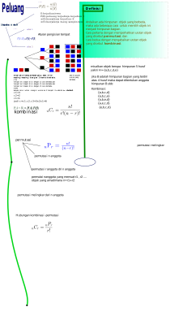
Statistik
Statistik adalah angka-angka yang dikumpulkan, dikelompkkan
atau ditabelkan sehingga didapat informasi terhadap masalah tertentu.
...
Jenis data
Data berupa angka yang diperoleh melalui pengukuran disebut data kuantitatif Contoh data kuantitatif : angka yang diperoleh dari pengukuran tinggi badan siswa;
sedangkan data kualitatif adalah data yang diperileh melalui pengamatan.Contoh data kualitatif : nomor WA siswa.
1.Jenis data dibawah yang termasuk data kuantitatif adalah
2. Jenis data dibawah yang termasuk data kualitatif adalah
1.Rerata atau mean : $\bar x=\frac {\sum \limits_{i=1}^{n}{x_i}}{n}$
2.Modus: $M_o$ banyaknya data yang sering muncul
3.Median: data yang terletak ditengah-tengan data berurut, untuk n ganjil : Me=$x_{\frac {n+1}{2}}$.
untuk n genap : Me=$\frac {1}{2}(x_{\frac {n}{2}}+x_{\frac {n+1}{2}})$.
3.Diberikan data x sbb:
7,6,8,8,6,7,8,7,8,8,7
Jumlah data adalah
4.Diberikan data x sbb:
10,6,7,7,9,8,9,9,10,10,6
Median dari data ini
5.Diberikan data x sbb:
7,7,8,8,7,7,8,7,8,8
Rerata dari x adalah
6.Diberikan data kelas ke 1 dari data berkelompok : k1 sbb:
164-167
Maka tepi bawah kelas ke 1 adalah
7.Jika kelas k1 adalah 164-167
Maka interval kelas k1 adalah
8.Diberikan kelas k : 70-74
Titik tengah kelas k adalah
9.Aturan Sturgess digunakan untuk menentukan
10.Diberikan data x sebanyak n buah data
jika log n=1,5 maka jumlah kelas dari data x menurut Sturgess adalah
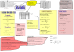
Kisi-kisi Ujian Matematika Kelas x
Sebuah
ilmu yang mempelajari bagaimana cara merencanakan, mengumpulkan,
menganalisis, lalu menginterpretasikan, dan akhirnya
mempresentasikan data merupakan pengertian dari
Penyajian
data yang dikelompokkan menurut distribusi frekuensi dapat
dinyatakan dengan grafik batang yang disebut
Perhatikan
tabel berikut.
Nilai
Frekuensi
31
– 40
2
41
- 50
13
51
– 60
13
61
– 70
14
71
– 80
24
81
– 90
19
91
– 100
5
Modus
dari data pada tabel di atas adalah
Tabel
berikut berisi data tinggi badan sekelompok anak dari suatu sekolah.
Tinggi
( cm )
Frekuensi
160
– 164
2
165
– 169
7
170
– 174
10
175
– 179
8
180
- 184
3
Rataan tinggi sekelompok anak tersebut adalah
Berdasarkan tabel soal no 4, jumlah kelas dari tabel di atas ada berapa banyak
Dibawah
ini yang bukan termasuk contoh persamaan linear tiga variabel adalah
…
3x
+ 2y + 2z = 24
x
+ y + z = 2
x
+ z = 2
2x
– y + 2z = 15
2x
+ y + z = 13
Arti
metode eliminasi sistem persamaan linear adalah …
Nilai
x dari 3x – 4 = 8 adalah …
Hasil
dari 2x – 3 jika disubstitusikan x = 5 adalah …
Nilai x dari x + 3y = 6 dan x – y = 2 adalah …
Aziz
membeli 4 roti, 3 donat, dan segelas kopi, ia harus membayar Rp.
14.000,00. Bimo membeli 2 roti, 4 donat, dan segelas kopi, ia harus
membayar Rp.11.000,00. Dilan membeli 5 roti dan 2 gelas kopi, ia
membayar Rp.8000,00. Model matematika dari cerita tersebut adalah …
Nilai
z yang memenuhi sistem persamaan linear berikut adalah …
3x
+ 2y – z = -3
5y
– 2z = 2
5z
= 20
Diketahui
:
x
+ y + 2z = 2
3x
-4z = -5
6z
= 3
Maka
nilai y yang memenuhi persamaan tersebut adalah …
Himpunan
penyelesaian dari
x
+ y –z = -3
x
+ 2y + z = 7
2x+ y + z = 4 adalah …
Nilai x dari persamaan berikut adalah …
x
+ y + z = -1
2x
– y – z = -5
2x
– 2y – z = 7
Nilai
p yang memenuhi 4p + 3q = 21 dan 2p – q = 3 adalah
Andi
membeli 1 pulpen dan 1 buku harga RP. 2000,00. Di toko yang
sama Budi membeli 5 pulpen dan 2 buku dengan harga Rp.7000,00.
Berapakah harga 1 buah pulpen?
Berikut
contoh pertidaksamaan linear, kecuali …
Titik
koordinat dari pertidaksamaan 2x + y ≤ 4 adalah …
Bu
Ayu membuat dua jenis kue, yaitu kue bolu dan kue cubit. Dalam
sehari, ia dapat membuat tidak lebih dari 80 kue. Biaya pembuatan
kue bolu adalah Rp.500,00 perbuah dan biaya pembuatan kue cubit
adalah Rp.300,00 perbuah. Modal pembuatan kue tidak lebih dari
Rp.34.000,00. Model matematika dari persoalan ini adalah …
.
Nilai dari adalah
. . .
Diketahui
fungsi .
Bayangan untuk nilai x = 3 adalah
Nilai
x dari
adalah
Grafik
dari fungsi kuadrat ,
memiliki titik puncak yaitu . . .
Jika
titik potong dengan sumbu X suatu fungsi kuadrat ialah
dan ,
maka persamaan sumbu simetrinya adalah . . .
Tiga
titik yang dilalui grafik fungsi kuadrat
adalah . . .
a.
b.
c.
d.
e.
Nilai
dari akar lainnya dari persamaan .
Jika salah satu nilai akarnya 4 adalah . . .
Sumbu
simetri dari grafik fungsi kuadrat
adalah . . .
Koordinat
titik potong grafik fungsi kuadrat
dengan sumbu x dan sumbu y adalah . . .
a.
b.
c.
d.
e.
Koordinat
titik potong pada fungsi kuadrat
dengan sumbu x adalah .
a.
b.
c.
d.
e.
Akar-akar
dari persamaan
adalah a dan b. jika
maka
adalah . .
Koordinat
titik potong fungsi kuadrat
terhadap sumbu Y adalah . . .
Diketahui
fungsi kuadrat .
Jika x = -1 maka nilai fungsi tersebut adalah . . .
Perhatikan
gambar berikut, fungsi kuadrat yang sesuai adalah . . .
a.
b.
c.
d.
e.
Selamat
Bekerja
Evaluasi(Kisi-kisi PAS)
...
Selamat.
Nilai :
Jumlah jawaban salah :
Jumlah jawaban benar :
Passing grade : %
e v a l u a s i
Jumlah benar :
Soal ke- : dari 40
Silakan pilih
Pilih kelas lalu klik tombol ok
GRA FIK
...
Fungsi eksponen adalah bentuk lain dari fungsi y
dimana x sebagai variabel bebas terletak pada posisi pangkat
dari basis bilangan berpangkat.
Bentuk umum dari fungsi exponen adalah
dimana
a adalah basis
k adalah konstanta
f(x) adalah fungsi x.
Bentuk paling sederhana adalah jika k=1 , a konstanta dan f(x)=x maka fungsi diatas menjadi
Persamaan eksponen adalah persamaan
bilangan berpangkat dimana pangkatnya berupa fungsi x
Sifat 1. Jika
maka f(x)=n
Soal 1
Nilai x agar persamaan diatas benar adalah
1
3
2
5
Sifat 2. Jika
maka f(x)=g(x)
Soal 2
Berdasarkan sifat 2 diatas , nilai x persamaan:
adalah
1
2
4
-3
Tiga asumsi menentukan x suatu persamaan exponen adalah
g(x)=h(x)
f(x)=1
f(x)=0
Untuk menentukan x adalah mengubah persamaan exponen menjadi persamaan biasa
Soal 3 :
berdasarkan sifat 2 maka
x-1=3x+2
x+1=3x-2
(x-1)(3x+2)=0
(x+1)(3x-2)=0
Soal 4: jika suatu persamaan exponen dapat diubah menjadi x-4=3x+2 maka x adalah
2
3
-3
-2
Soal 5.Persamaan exponen
dapat diubah menjadi
Soal 6
nilai x dari persamaan exponen
adalah
2 dan 3
-2 dan -3
-2 dan -3
3 dan -2
Soal 7.Persamaan exponen
himpunan penyelesaiaannya adalah x berturut-turut
-1,0,2
0,1,2
1,2
2
Soal 8.Persamaan exponen
nilai x adalah
4
3
2
1
Soal 9.Fungsi exponen

![]()
![]()
![]()
![]()
![]()
![]()
![]()
![]()
![]()
![]()
![]()
![]()
![]()
![]()
![]()
![]()
![]()
![]()
![]()
![]()
![]()
![]()
![]()
![]()
![]()
![]()
![]()
![]()
![]()
![]()
![]()
![]()
![]()
![]()
![]()
![]()
![]()